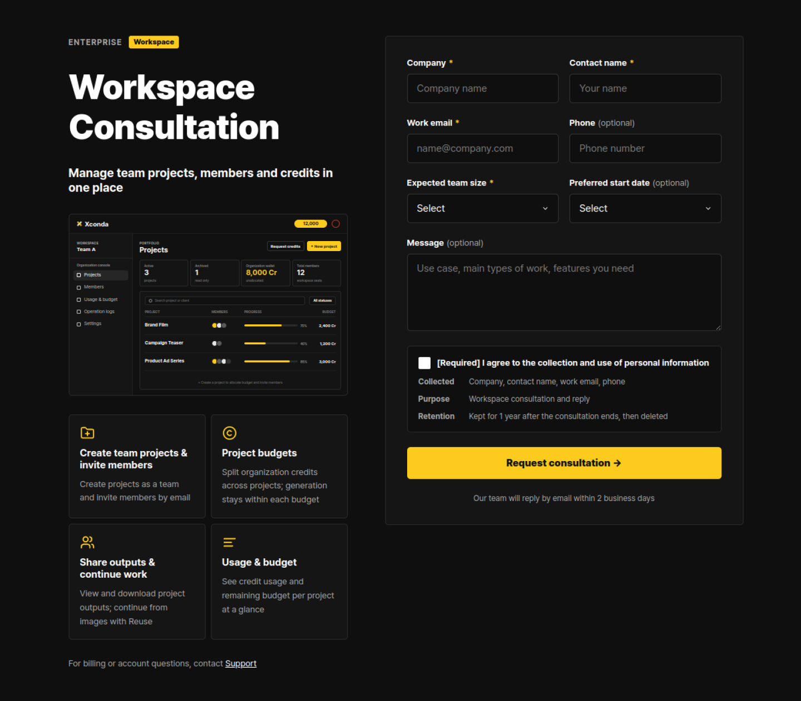
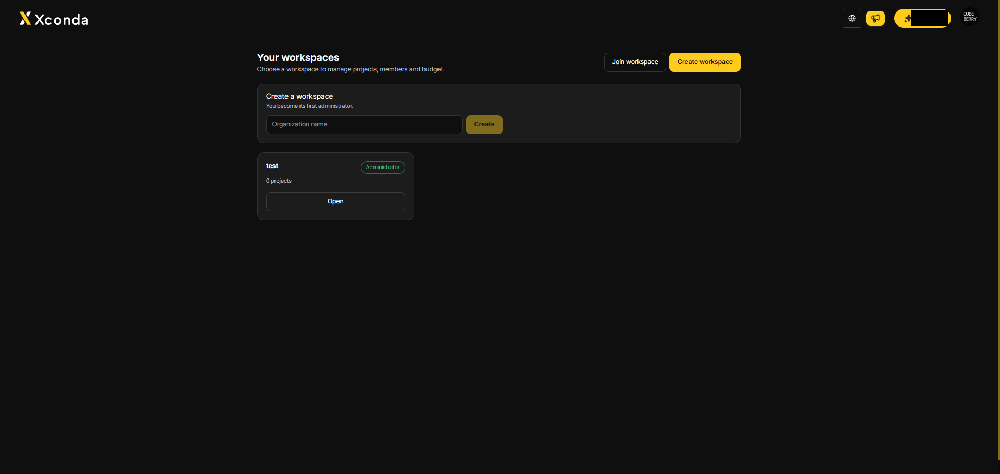

- 工作区（Workspace） = 团队一起用的房间
- 项目（Project） = 一整件工作
- 成员（Member） = 一起工作的同事
- 积分（Credit） = 在 Xconda 中使用的代币。用一次，就少一点。
- 组织钱包 = 放全公司积分的大钱包
- 预算 = 分给每件工作的积分数量
- 管理员 = 可以管理房间或工作、可以做决定的人
- Reuse = 用已经做好的东西，接着往下做
- 测试版（Beta） = 还在试用的阶段。还没有全部做好。
1. 什么是工作区
工作区是团队一起用的房间。
它和一个人用的时候不一样。团队的工作、成员和积分，可以放在一处看。
咨询页面上也是这样写的。在一处管理团队项目、成员和积分。
第一个画面上是这样写的。Choose a workspace to manage projects, members and budget.
意思是：“请选择一个房间，在里面看工作、成员和预算。”
| 页面上的说法 | 好懂的意思 |
|---|---|
| 创建和分享团队项目 | 做团队的工作。做好的东西，和成员一起看。 |
| 查看项目进度 | 一眼看清工作做到哪一步了。 |
| 自由调整成员 | 可以加成员，也可以去掉成员。随时都能改。 |
| 按成员发放积分 | 把积分分给大家。谁用了多少，也能轻松看到。 |
| 可以做的事 | 好懂的说明 |
|---|---|
| 新建团队项目 · 邀请成员 | 新建一整件工作。再邀请成员进来。邀请进房间，和加进工作，是两件事。要分开做。请看第 6 章。 |
| 分配项目预算 | 把大钱包里的积分，分给每件工作。只能在分到的数量里面做东西。分预算，不会多出新的积分。请看第 5 章和第 7 章。 |
| 查看用了多少 | 在 Usage & budget 画面看。可以看积分从哪里来。也可以看积分去了哪件工作。 |
| 看记录 · 改设置 | 在 Operation logs 看重要事情的记录。在 Settings 改公司名字、语言、时间、标志和默认颜色。 |
| 分享成果 · Reuse | 可以看做好的成果。也可以下载下来。在照片上点 Reuse，可以接着往下做。但 Reuse 只能在同一件工作里面用。不能拿到别的工作里。不能用链接在外面打开。在 Beta 1 里不行。请看第 10 章。 |
Project data is isolated by access policy. 意思是：“每件工作能看的人是定好的。不是谁都能看。”
Workspace，就去房间。· 顶部的个人积分数字，用黑框遮住了。因为不能给别人看。2. 开始使用 — 先申请咨询
不是注册后马上就能用。要先申请咨询。
在咨询页面写好内容，再发出去。然后会收到回复邮件。在 2 个工作日以内到。
工作日是公司上班的日子。周末不算。
页面的标题是Workspace Consultation。发送的按钮是Request consultation。

2-1. 申请前先准备
- 准备好公司名字。
- 准备好负责人名字。
- 准备好工作邮箱。回复会发到工作邮箱。请写一个你一定能看的邮箱。
- 先想好会有几个人用。这一格一定要填。
- 先想好想从什么时候开始用。没有想好，也能申请。
- 把想问的事先写下来。写上为什么要用，很好。写上做什么工作，很好。写上需要什么，也很好。这一格可以空着。
- 要同意使用个人信息。不同意，就发不出去。
2-2. 申请表要写什么
| 格子的名字 | 一定要写吗？ | 怎么写？ |
|---|---|---|
| 公司名 | 必填 * | 自己写。格子里写着 회사명 입력。 |
| 负责人名字 | 必填 * | 自己写。格子里写着 이름 입력。 |
| 工作邮箱 | 必填 * | 自己写。例如：[email protected]。回复会发到这里。请仔细看，有没有写错。 |
| 联系方式 | 可选 | 自己写。例如：010-0000-0000。可以空着。 |
| 预计使用人数 | 必填 * | 从列表里选。格子里写着 선택。请在申请画面里直接看。 |
| 希望开始使用的时间 | 可选 | 从列表里选。选你想开始用的时间就可以。 |
| 咨询内容 | 可选 | 自己写。格子里写着 사용 목적, 주요 작업 유형, 필요 기능 등。 |
2-3. 个人信息同意 — 一定要勾选
申请表下面有 [必填] 个人信息收集和使用同意。请读完，再勾选。
| 项目 | 页面上的说法 |
|---|---|
| 会收集什么？ | 公司名、负责人名字、工作邮箱、联系方式 |
| 为什么用？ | 为了工作区 引入 咨询和回复。就是说，为了咨询和发回复才用。 |
| 会保存多久？ | 个人信息在咨询结束后 1 年后删除。 |
2-4. 发出后要做的事
- 点 Request consultation 按钮。
- 请等一等。在 2 个工作日以内，会收到回复邮件。
- 如果邮件没到，先看垃圾邮件箱。再看邮箱有没有写对。
- 关于钱或账号有问题，请问客服中心。
3. 进入房间 — 选择、加入、新建
请先登录。再去 xconda.ai/workspace。会打开 Your workspaces 画面。
意思是“我的工作区”。是我加入的房间列表。
3-1. 从列表打开
- 一个房间，是一张卡片。
- 卡片上有房间名字。也有我的角色。还有项目数量。
- 例如：
Administrator是管理员。0 projects是 0 个项目。 - 点卡片上的
Open按钮。就进入那个房间的管理画面。先打开的是Projects画面。 - 右上角有 2 个按钮。是
Join workspace和Create workspace。

Your workspaces 画面。可以看到房间卡片。也可以看到 Open 按钮。还可以看到 Join workspace 和 Create workspace 按钮。· 顶部的个人积分数字，用黑框遮住了。3-2. 新建房间 — Create workspace
- 点
Create workspace按钮。会打开Create a workspace格子。 - 那里写着
You become its first administrator.意思是“建房间的人，就是第一个管理员”。 - 在
Organization name写公司名字。 - 点
Create按钮。房间就建好了。 - 新建的记录会留在
Operation logs里。会写Organization created。请看第 8 章。

Create a workspace 画面。写 Organization name。再点 Create。· 顶部的个人积分数字，用黑框遮住了。3-3. 进入已有的房间 — Join workspace
有 Join workspace 按钮。进入已有的房间时点它。邀请成员的方法，请看第 6 章。
4. 管理画面，一眼看清
打开房间后，左边一直有菜单。名字是 Organization console。可以把它看成公司管理菜单。
最上面是现在进入的房间名字。
| 菜单（画面上的名字） | 地址 | 好懂的说明 |
|---|---|---|
Projects | /workspace/projects | 看工作列表。也看工作状态。也看分到的预算。也看谁能看。是第 5 章。 |
Members | /workspace/members | 邀请成员。定角色。是第 6 章。 |
Usage & budget | /workspace/usage | 看积分从哪里来。也看积分去了哪里。是第 7 章。 |
Operation logs | /workspace/logs | 看重要的事是谁做的。也看被拦住的请求。也看改预算的事。是第 8 章。 |
Settings | /workspace/settings | 定房间名字、语言、时间、标志和默认颜色。是第 9 章。 |
Billing & documents BETA | — | 现在还点不了。是关着的。账单和付钱的方法，在 Beta 2 里出。请看第 9 章。 |
左下方一直有这样一句话：Project data is isolated by access policy. 意思是：“每件工作能看的人是定好的。”
进了房间，不等于能看所有工作。每件工作要另外加人进去。请看第 6 章。
5. Projects — 查看和新建项目
Projects 画面上是这样写的。See project health, shared budgets and access in one place.
意思是：“在一处看工作的状态、分到的预算，还有谁能看。”
5-1. 上面的 5 张卡片
| 卡片（画面上的名字） | 好懂的意思 |
|---|---|
Active | 现在正在做的工作数量。 |
Idle candidates | 要看一看的工作数量。下面写着 review suggested。 |
Archived | 做完后收起来的工作数量。写着 read only。只能看。不能改。 |
Organization wallet | 大钱包里剩下的积分。单位是 Cr。写着 issued by XCONDA, unallocated。意思是：“是 XCONDA 放进来的。还没有分给任何工作。” |
Total members | 全部成员的数量。下面写着 workspace seats。 |
5-2. 最重要的规则 — 从大钱包分到工作里
Organization wallet to project budget画面上是这样写的。
XCONDA issues credits to the organization wallet after contract or payment confirmation. Manage budget only allocates or returns credits already held in that wallet; it never buys or creates credits.说得简单一点，是这样。合同签完了。或者付钱的事确认了。然后 XCONDA 把积分放进大钱包。分预算，只是动那个钱包里已经有的积分。只是发给工作，或是拿回来。不会买积分。也不会新做积分。

Projects 画面。上面可以看到 5 张卡片。也可以看到大钱包的说明。· 顶部的个人积分数字，用黑框遮住了。5-3. 找工作
- 在搜索格
Search project or client写工作名字。写客户名字也可以。 - 点
All statuses。可以按状态来选着看。右边有全部工作的数量。 - 如果一件工作都没有，会写
No projects yet。下面会写Create a project to allocate budget and invite members.意思是：“新建一件工作，就可以分预算，也可以邀请成员。” - 右上角有 2 个按钮。
Request credits是想多要一点积分时点的。+ New project是新建工作时点的。
5-4. 新建工作 — + New project → Create project
点 + New project，会打开 Create project 窗口。那里写着 Allocate existing organization-wallet credits and assign workspace members. 意思是：“把大钱包里的积分分出来。再把成员加进这件工作。”
| 格子（画面上的名字） | 要写什么？ |
|---|---|
Project name | 工作的名字。例如会写 e.g. Global Brand Film。 |
Client | 客户的名字。例如会写 e.g. Northstar Pictures。 |
Initial budget | 一开始要分出去的积分数量。只能分大钱包里有的数量。 |
Members and project roles | 要加进这件工作的成员。在 Search existing members 里找。从已经在房间里的成员中找。建工作的人，会显示为 Project admin (you)。意思是“我就是这件工作的管理员”。 |
- 窗口下面写着
Organization wallet available: ○○ Cr · Project creation does not issue new credits.意思是：“大钱包里有 ○○ Cr。新建工作，也不会多出新的积分。” - 不想建了，点
Cancel。要建，点Create project。

Create project 窗口。可以看到 Project name、Client、Initial budget、Members and project roles 格子。· 成员的邮箱和顶部的个人积分数字，用黑框遮住了。6. Members — 成员和角色
Members 画面上是这样写的。Workspace invitation and project assignment are managed separately.
意思是：“邀请进房间，和加进工作，要分开做。”进了房间，不等于自动进每一件工作。
6-1. 角色分成两种
Two separate role scopesWorkspace: organization admin or member. Project: project admin or project member. Server-side policy remains the source of truth.说得简单一点，是这样。角色分成两层。第一层是房间里的角色。是管理员，或是成员。第二层是工作里的角色。是那件工作的管理员，或是那件工作的成员。最后定下来的，是服务器的规则。
| 是哪里的角色？ | 角色（画面上的名字） | 在哪里定？ |
|---|---|---|
| 房间（工作区） | Organization admin / 成员 | 在 Members 画面的 Role 格子里定。 |
| 工作（项目） | Project admin / Project member | 新建工作时定。在 Members and project roles 里定。 |
Settings 画面里也有同样的话。在 Beta 1 里，没有单独定角色的画面。但房间和工作的界限，在每一次请求里都会守住。
房间管理员可以看房间里的所有工作。可以分预算，也可以拿回来。可以管理成员。可以把工作收起来，也可以再拿出来。
但要在别人建的工作里亲手做东西，就要有那件工作的角色，另外定。做 Reuse 时也一样。
反过来，自己新建工作的人，就是那件工作的管理员。新建工作的窗口里写着
Project admin (you)，就是这个意思。6-2. 在成员列表里能看到什么
| 格子（画面上的名字） | 好懂的意思 |
|---|---|
Member | 成员的名字和邮箱。 |
Role | 在房间里的角色。示例画面里写着 Organization admin。 |
Workspace status | 看现在在房间里是不是活动中。例如：Active 是活动中。 |
Assigned projects | 加进去的工作。如果没有，会写 Not assigned。意思是“还没有加进任何工作”。 |
Monthly usage | 这个月用的积分。单位是 Cr。 |
Access control | 定能不能进来的格子。示例画面里写着 Active。 |

Members 画面。可以看到成员表。也可以看到角色说明。· 成员的邮箱和顶部的个人积分数字，用黑框遮住了。6-3. 邀请成员 — Invite member
- 点
Members画面右上角的Invite member按钮。 - 咨询页面上写着，用邮箱邀请。
- 邀请时，先定好两件事。看工作邮箱对不对。再定邀请后要加进哪件工作。邀请进房间，和加进工作，是两件事。
7. Usage & budget — 查看用了多少
Usage & budget 画面上是这样写的。Trace where organization credits came from and how they move into project budgets.
意思是：“看积分从哪里来。也看积分去了哪件工作。”右上角的按钮是 Request credit。
7-1. 剩下的数量，不能自己改
No balance editingThe organization wallet changes only through XCONDA issuance, project allocation, return or reversal transactions. Card checkout and billing documents are not part of Workspace Beta 1.说得简单一点，是这样。大钱包的数量，不能用手改。只有在定好的时候才会变。XCONDA 放进来时变。分给工作时变。拿回来时变。把错的改回来时变。用卡付钱，在 Beta 1 里不行。账单在 Beta 1 里也不行。
7-2. 上面的 4 张卡片
| 卡片（画面上的名字） | 好懂的意思 |
|---|---|
Organization wallet | 大钱包里剩下的积分。写着 XCONDA-issued, available to allocate。意思是：“是 XCONDA 放进来的。可以分给工作。” |
Allocated budgets | 分给各件工作的积分，全部加起来的数。按现在正在做的工作算。 |
Processing amount | 正在做东西，先占住的积分。画面上写着 generation holds。 |
Total usage | 到现在为止用的积分，全部加起来的数。按所有工作算。 |
7-3. 图表、信号、多要一点的请求
Credit usage— 用了多少的图表。 看用的数量是怎么变的。7D是 7 天。30D是 30 天。点按钮来换。Budget signals— 预算信号。 这里告诉你，每件工作的预算够不够。如果工作还没有开始，会写Credit movements appear here once work begins.意思是：“工作开始后，积分的变化会出现在这里。”Project budget requests— 多要一点的请求列表。 工作里想多要一点预算，就会堆在这里。如果没有，会写No project has asked for more budget.意思是“没有工作多要预算”。- 如果预算不够。 如果项目预算不够，可以申请追加。由 CubeBerry 管理员发放积分。

Usage & budget 画面。可以看到 4 张卡片。也可以看到 Credit usage、Budget signals、Project budget requests。· 顶部的个人积分数字，用黑框遮住了。8. Operation logs — 查看谁做了什么
Operation logs 画面上是这样写的。Review sensitive actions, blocked requests and budget changes.
意思是：“看重要的事、被拦住的请求，还有改预算的事。”这是记下来、以后能查的记录。
- 搜索格是
Search actor, action or target。填一个人、一件事、一个对象来找。 - 记录用表格显示。有 5 格。
Time是时间。Actor是做事的人。Action是做的事。Target是对象。Result是结果。 - 示例画面里有建房间的记录。做的事是
Organization created。结果是Success。Success 是做成了的意思。时间里有日期，也有时刻。 - 右上角的
PDF export, Beta 2按钮，现在还点不了。下载 PDF，在 Beta 1 里不行。

Operation logs 画面。可以看到 Time、Actor、Action、Target、Result 表格。· 做事的人的编号、对象的编号，还有顶部的个人积分数字，用黑框遮住了。9. Settings — 修改基本设置
Settings 画面上是这样写的。Workspace identity settings. Billing and documents remain in Beta 2.
意思是：“这里定房间的基本信息。账单和文件在 Beta 2 里。”
9-1. 房间信息 — Workspace profile
| 格子（画面上的名字） | 好懂的说明 |
|---|---|
Organization name | 公司名字。房间列表和管理画面里，显示的就是这个名字。 |
Default language | 默认语言。示例画面里选的是 English。 |
Time zone | 时间的标准。示例画面里选的是 Asia/Seoul。请一定记住。这不只是画面上怎么显示。它定的是每个月的总数从哪里算起。画面上也写着 This is the monthly aggregation boundary, not a display preference. Changing it moves every monthly total. 一改，每个月的总数都会一起变。 |
Logo | 公司标志。PNG or SVG, up to 512 KB。只能用 PNG 或 SVG 文件。大小只能到 512 KB。用 Choose file 选文件。选好的文件，要点了保存才算数。 |
Base color | 默认颜色。写颜色编号。示例画面里的颜色，只是那家公司的例子。用你自己公司的颜色就可以。 |
改完后，一定要按 Save settings 按钮。按了，才会保存。
9-2. 右边的 3 个说明框
| 框（画面上的名字） | 好懂的意思 |
|---|---|
Brand Kit boundary | 公司标志和默认颜色，放在这里。参考照片、角色、活动的感觉，放在每件工作的 Brand Kit 里。不要混在一起。 |
Permission engine | 在 Beta 1 里，没有单独定角色的画面。但房间和工作的界限，在每一次请求里都会守住。请看第 6 章。 |
Billing & documents · BETA 2 | 账单、付钱的方法、下载文件，在 Beta 2 里出。现在还不行。 |

Settings 画面。可以看到 Workspace profile。也可以看到右边的 3 个说明框。· 顶部的个人积分数字，用黑框遮住了。10. 分享成果和 Reuse
咨询页面上是这样写的。可以看做好的成果。也可以下载下来。在照片上做 Reuse，可以接着往下做。
- 谁能看？ 成果在那件工作里面。只有能看那件工作的人才能看。画面上也写着
Project data is isolated by access policy. - Reuse 只能在同一件工作里面用。 不能拿别的工作的成果来 Reuse。不能用链接在外面打开。在 Beta 1 里不行。
- 要做东西，要有那件工作的角色。 就算是房间管理员，没有那件工作的角色，也不能做。在别人建的工作里，也不能做 Reuse。请看第 6 章。
11. 常见问题
Q. 能马上注册就用吗？
不能。要先申请咨询。请看第 2 章。发了申请表，会收到回复邮件。在 2 个工作日以内到。写完后，可以在 Your workspaces 画面打开房间。也可以用 Create workspace 新建房间。请看第 3 章。
Q. 申请表里一定要写的是什么？
是 4 样。公司名、负责人名字、工作邮箱、预计使用人数。个人信息同意，也一定要勾选。联系方式可以空着。希望开始使用的时间也可以空着。咨询内容也可以空着。请看第 2 章。
Q. 建了房间，谁是管理员？
建房间的人，就是第一个管理员。画面上也写着 You become its first administrator.
Q. 房间管理员，能在所有工作里马上做东西吗？
不能。房间管理员可以看所有工作。也可以管理预算和成员。但要在别人建的工作里做东西，就要有那件工作的角色，另外定。做 Reuse 时也一样。在我自己建的工作里，会自动成为那件工作的管理员。请看第 6 章。
Q. 邀请了成员，就能看所有工作吗？
不能。邀请进房间，和加进工作，是两件事。画面上也写着 Workspace invitation and project assignment are managed separately. 没有加进工作的人，看不到那件工作。列表里会写 Not assigned。
Q. 积分从哪里来？谁放进来？
合同签完了。或者付钱的事确认了。然后 XCONDA 把积分放进大钱包。在管理画面里，只能分已经有的。也可以拿回来。不能买积分。也不能新做积分。新建一件工作，也不会多出新的积分。
Q. 项目预算不够，怎么办？
可以申请追加。由 CubeBerry 管理员发放积分。请看第 7 章。
Q. 能自己改剩下的数量吗？能用卡付钱吗？
在 Beta 1 里不行。大钱包只在定好的时候变。放进来时变。分出去时变。拿回来时变。改回来时变。画面上也写着 No balance editing。用卡付钱，在 Beta 1 里没有。账单在 Beta 1 里也没有。账单和付钱的方法，在 Beta 2 里出。
Q. 能 Reuse 别的工作的照片吗？
不能。在 Beta 1 里，只能在同一件工作里面用。不能拿到别的工作里。不能在外面打开。
Q. 能把记录下载成 PDF 吗？
现在还不行。Operation logs 画面的按钮上写着 PDF export, Beta 2。
12. 最后检查表
顺序很重要。先申请咨询。再定房间和工作。再邀请成员，再加进工作。
- 公司名、负责人、工作邮箱，都写对了，再申请咨询了吗？
- 预计使用人数，选的是真的会用的人数吗？
- 读了个人信息同意，再勾选了吗？看了会收集什么吗？看了为什么用吗？
- 建好房间了吗？定了第一个管理员是谁吗？（
Create workspace→Organization name） - 定了工作要怎么分吗？按工作分，或按客户分，都可以。
- 定了每件工作一开始分多少吗？只能分大钱包里有的数量。（
Initial budget） - 确认了要邀请的成员的工作邮箱吗？除了邀请进房间，还定了要加进哪件工作吗？
- 房间管理员要在别人的工作里做事吗？如果是，也一起给了那件工作的角色吗？
- 在
Settings里，定了公司名字、默认语言、时间标准、标志和默认颜色吗？按了Save settings吗？时间标准，定的是每个月的总数。 - 定了谁看
Usage & budget和Operation logs吗？定了多久看一次吗？ - 把 Beta 1 里不能做的事，从公司说明里去掉了吗？用卡付钱、账单、下载 PDF、拿到别的工作 Reuse、在外面打开，都不行。